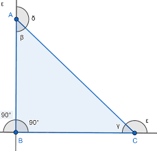

El triángulo rectángulo es aquel que tiene un ángulo interior que es recto, es decir, mide 90º.
Este tipo de triángulo es una de sus clasificaciones de acuerdo a la medida de sus ángulos interiores. La principal característica del triángulo es que, como ampliaremos más adelante, tiene un lado de mayor longitud (llamado hipotenusa) y otros dos denominados catetos cuya unión forma el ángulo recto. Otro detalle a notar es que cualquier cuadrado separado en dos por alguna de sus diagonales se divide en dos triángulos rectángulos (como vemos en la imagen de abajo).
Vértices: A, B, C.
Lados: AB, BC, AC, donde AC es la hipotenusa y AB y BC son los catetos.
Ángulos interiores: 90º,β,γ. Los tres deben sumar 180º.
Ángulos exteriores: 90º,δ,ε.

Área(A): Área(A): Área(A): En este caso, podemos calcular el área solo conociendo la medida de dos de lados, pues la base y la altura serán cada una un cateto. Si tengo el dato de la hipotenusa y de uno de los catetos, puedo utilizar el Teorema de Pitágoras para despejar el otro lado (lo demostraremos en un ejemplo líneas abajo). La fórmula sería la siguiente: A=AB*BC/2
Perímetro(P): Sería la suma de la longitud de los lados: P=AC+AB+BC